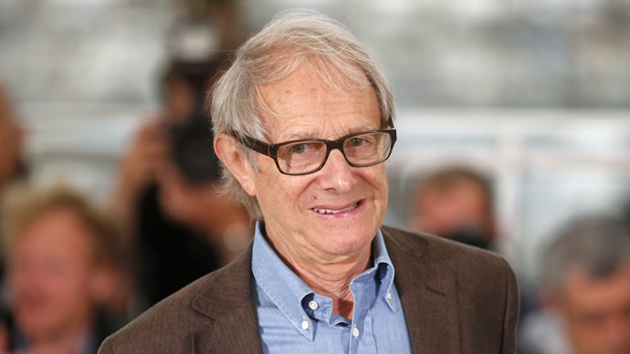

I, DANIEL BLAKE
Directed by Ken Loach | UK-France-Belgium | 2016 | 100 mins
Winner of the 2016 Cannes Film Festival Palme d'Or!
EVENT INFORMATION
OPENING NIGHT - PITTSBURGH PREMIERE!
Thursday, March 23, 2017
7:00pm | McConomy Auditorium, CMU
BUY TICKETS!
EVENT INCLUDES:
- Opening Night Food Reception with British-style cuisine and music accompaniment by local pianist, Antonio Cruise
- Q&A moderated by Roger Rouse (University of Pittsburgh)
CO-PRESENTED BY: Britsburgh
CO-SPONSORED BY: CMU’s Humanities Scholars Program and CMU’s Philosophy Department
ABOUT THE FILM
“Working class hero: Ken Loach's 'I, Daniel Blake' is a must-see in the era of Brexit and Donald Trump.”
- Sophia A. McClennen, Salon
I, Daniel Blake portrays one man's journey through economic and social challenges facing working-class families throughout the world today. Although the film is set in the UK, the problems its characters encounter will be all too familiar to audiences in the U.S. People trying to find a steady job, feed a family, and receive the health care that they need are increasingly reduced to numbers on a page by cumbersome and discouraging bureaucracies. How does a man who has suffered a heart attack and been forced out of his job deal with the mounting obstacles to receive care and support? The stubbornly defiant Daniel Blake takes a stand, joining with a struggling single mother and her two children in a shared fight for dignity and compassion. Graced with humor and heart, I, Daniel Blake, winner of the Palme d’Or at the 2016 Cannes Film Festival, is a moving, much-needed reminder of the power of empathy and solidarity from one of the world’s greatest living filmmakers.
AWARDS
- BAFTA, 2017, Outstanding British Film of the Year
- British Independent Film Awards, 2016, Best Actor, and Most Promising Newcomer
- Cannes Film Festival 2016, Palm DogManitarian Award, Palme d'Or, and Prize of the Ecumenical Jury - Special Mention
- Dublin Film Critics Circle Award, 2016, Breakthrough Awards-International
- European Film Awards, 2016, European University Film Award
- Locarno International Film Festival, 2016, Audience Award
- London Critics Circle Film Award, 2016, ALFS Award
- New York Film Critics, Online, 2016, NYFCO Award Top Films of the Year
- San Sebastián International Film Festival, 2016, Audience Award Best Film
- Stockholm Film Festival, 2016, Audience Award
- Vancouver International Film Festival, 2016, Most Popular International Feature
ABOUT THE DIRECTOR
|
 |
Ken Loach was born in 1936 in Nuneaton in the British Midlands. In a career lasting more than fifty years, he has directed over sixty films, including both theatrical releases and numerous dramas and documentaries for television. Guided by an insistently radical vision, Loach has had “one of contemporary cinema’s most intriguing and thoughtful careers. His finest films remain explicitly political without becoming didactic, deadly serious though leavened by humour, and powerfully emotional even when fueled by the most intellectual ideas. Like the Italian and Czech films he cites as major influences, Loach mines profound insights out of the mundane details of ordinary life, creating a multivalent portrait of the working class seldom seen on film.” (Senses of Cinema) While often focusing on economic and emotional hardship, he regularly calls attention to the many forms of solidarity that people foster in their daily lives and the progressive possibilities these open up. His films have garnered numerous awards from leading festivals around the world. |